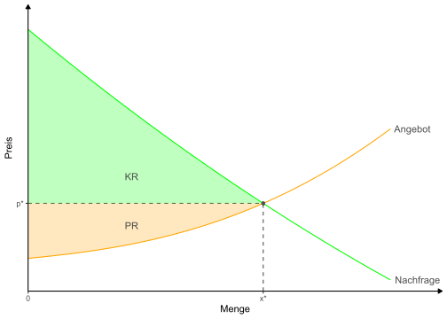

8 Nachfrage, Angebot Märkte
8.2 Angebotsfunktion
\[\max \pi=\bar{p}\times x-TC(x)\]
\[\frac{d\pi}{dx}=\bar{p}-MC\overset{!}{=}0 \iff \bar{p}=MC\]
Höherer Preis \(\rightarrow\) Menge ausdehnen, bis wieder Preis=Grenzkosten

\(\rightarrow\) Die Menge wird immer soweit ausgedehnt, bis die Grenzkosten dem Preis (Steigung der Erlösfunktion) entsprechen. Damit ist die Grenzkostenfunktion die Angebotsfunktion.
